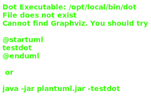

Hierarchy-Diagram
{kind=link}
Legend
 interface
interface
 public property
public property
Hierarchy
- IFieldData
Index
Properties
Optional accept
True if this foreign key should accept built documents
Optional data
The foreign data that manages this field
Optional default
True if this field has a default value. This will added to the document on GET, POST, and PUT requests if the field is missing.
Optional dummy
Set if this is a dummy field (dne in database)
Optional foreign
The foreign ApiRoute that manages this field
Optional freeable
True if this foreign object reference can be freely deleted
Optional get
True if this key shouldn't be dereferenced
Optional hidden
True if this field is hidden and should not be referenced
Optional hide
True if this field should be hidden on GET-ALL requests
Optional hide
True if this field should be hidden on GET requests
Optional hide
True if this key should be shown in dereferenced docs
Optional instance
If type is an array or step, this is the type of that array or step
Optional manager
String name of the manager for this type. Used for dependency map resolving and is removed afterwards.
Optional name
Name of this field. Optional, but should always be set.
Optional optional
True if this field is optional
Optional override
If true, dereference this field if the GET is a user route and deref is disabled
Optional parent
Parent ApiRoute
Optional parent
If set, this key is a parent key pointing to the local key set in this document ie. module is a parent of task. IE: module[tasks] <-> task[module] so tasks.module.parentReferenceKey = tasks
Optional preserve
True if this is string should preserve trailing whitespace
type
The type of the field
Optional user
If field is missing on user routes, send this instead
An object representation of the metadata for each document field. This is used to dynamically build routes, parse inputs, and convert raw database data into clean inputs.